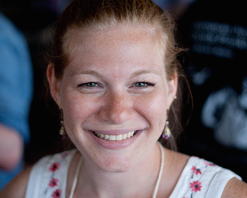
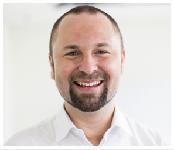
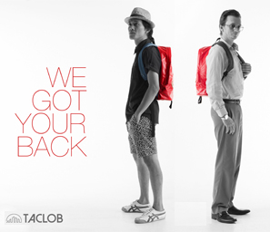

A day of inspiration, education, and skills development for user experience practitioners.
UXPH 2014 aims to inspire designers, developers enthusiasts to learn more about improving the human experience while adding business value. This conference is for anyone who wants to learn what UX is and how it can make a difference in company's products and services.
What you will learn
- Have a better understanding of what UX is and is not.
- Are you ready to join the UX bandwagon? Find out how to plot your own UX career path no matter what profession you are originally from.
Students, this is your chance to plot your UX career early on! - Get an idea on the future of User Experience and learn how rapidly evolving technologies affect UX professionals.
- Learn how design thinking and user experience can be applied online and offline through our Philippine Design Heroes.
- Learn how to develop UX leadership skills, and handle some of the trickiest parts of being a successful User Experience Designer, practitioner and leader.
Perks and Freebies
- Network with industry leaders and UX practitioners
- Get a FREE UX certificate.
- UXPH freebies for everybody!
Schedule
November 15, 2014, 9:00 AM - 4:30 PM
8.00 am – 9:00am
Registration
9:00 am – 9:30am
Introduction
9:30am – 10:20am
The Integral Designer: Developing You
10:25am – 11:15am
Fringe UX: Designing for the future
11:20am – 11:40am
Philippine Design Heroes
11:45am – 12:05am
Philippine Design Heroes
12:05 – 1:30pm
LUNCH
Note: Select a workshop that suits your interest. You can only select one workshop to attend to on the day of the event.
1:30pm – 4:30pm
Workshop Option 1
1:30pm – 3:30pm
Workshop Option 2
4:00pm – 4:30pm
Closing Remarks
Speakers

Whitney Hess
Whitney Hess is a user experience coach who enables leaders worldwide to mindfully design their products, their companies, and themselves. She is on a mission to put humanity back into business.
For the last decade, Whitney has helped hundreds of companies make their products easier and more pleasurable to use by developing empathy for their users. Her techniques eliminate haphazard decision making, provide systems for prioritizing efforts, and dramatically improve team dynamics. She offers leadership coaching for user experience directors, career coaching for practitioners, and product strategy workshops for teams.
Learn more about Whitney on her blog.
Patti Hunt
Patti is a founder and director of On-off Design & Technology. She has previously held senior positions as User Experience (UX) consultant, Service Designer and Strategic Design Director for companies in Australia and Hong Kong. Patti works with global corporations and start-ups to help them innovate their business models, value propositions and digital strategies. She believes that the most successful people in life have the eye of a designer, the mind of an engineer, the heart of an artist and the drive of an entrepreneur.

Kristin Low
Kristin Low is a founder of On-off Design & Technology. He has a background in user experience (UX) design, digital service design and product management. Kristin is an active member of the design and business communities in Hong Kong as an MC, mentor and trainer as well as hosting jams and hackathons. He founded and built the Design Thinking network in Hong Kong, which now has over 600 members. Kristin is passionate about blending human-centered insights with quantitative data to drive business growth and innovation.
Pamela Cajilig
Pamela Cajilig is a design and business anthropologist, entrepreneur, and women's advocate. She is Co Founder and Executive Research Director at Curiosity Design Research, a consultancy that helps organizations use design as a platform for inspiration, solutions, and social change. Pamela serves on the Board of Advisors of two NGOs: Roots of Health (maternal and reproductive health) and WeDpro (women's rights and education). She is also a part-time lecturer and curriculum consultant at the Development Studies Program at Ateneo de Manila University. Pamela has published on the intersections of business, design and culture within the Philippines and Asia, and has recently been elected into the Board of Directors of the Anthropological Association of Philippines.

Jourdan Sebastian & Justin Capen
Jourdan and Justin are the proponents of TACLOB, a social enterprise for the benefit of typhoon Haiyan affected areas. Jourdan is an award winning film producer/director and a self-initiated disaster relief facilitator who aspires to make the Philippines the social enterprise epicenter of the world. Justin is a financial and business development consultant who focuses on NGOs and social enterprises to create inclusive socioeconomic growth.

Cristina del Rosario
Cristina is a detail-oriented industrial designer who seeks social change through simple and well-thought-out products. She has a BS in Industrial Design from the Georgia Institute of Technology, where she graduated summa cum laude. She was recognized at the International Design Excellence Awards in 2010 for her student work in the design of a medical device for third world applications. She currently works as the Product Research Manager for Sari Software Solutions, where they work to bring technology to the base of the pyramid.
Venue sponsored By: De La Salle University
How to get to De la Salle Univerity
Register
If you are unable to pay online, please email: payment [at] uxph [dot] co
Complete the form below and we will email you details of the sponsorship immediately.

THANK YOU!
Join our group on Facebook and discuss various UX related topics with professionals. Don't worry, we are nerdy geeks and love all types of conversations!
VISIT UXPH FACEBOOK GROUP
Visit Our Facebook Page
Get updates on UX events in the Philippines through our facebook page.
We make great content!
Subscribe and get immediate updates for our workshops, events and blog posts!